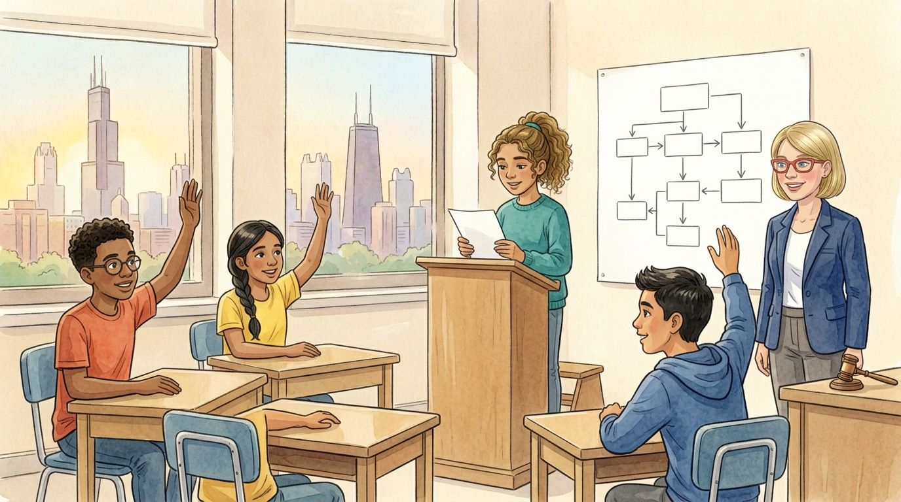

Grade 7 · Social studies · SS.6-8.CV.5.MC
The law that almost changed pi
A story about a classroom legislature, a strange bill about circles, and the steps that protect us from bad laws.
La ley que casi cambió pi. Un cuento sobre una legislatura en el salón, un extraño proyecto de ley sobre círculos y los pasos que nos protegen de las malas leyes.
Social studies words you will learn
Tap a green word to see what it means.
Toca una palabra verde para ver qué significa. Con la ayuda activada, verás también la definición en español.
The story
El cuento está en inglés. Pulsa «Listen to the story» para escucharlo y toca las palabras verdes cuando no entiendas una.
Ms. Novak turned the classroom into a . Desks formed a half circle, and Athena stood at a podium with a she had written: Every Friday, the last ten minutes of class will be free reading time. "All in favor?" Twenty hands went up. "Wait," said Ms. Novak. "In real life, it's not that fast. And there's a good reason why."
She pointed to a flowchart on the wall. "In Illinois and in most states, a bill must pass both of the legislature, the House of Representatives and the Senate. In each one, it is first studied by a , then debated and voted on. If both chambers pass it, it goes to the governor, who can sign it or it."
"Why so many steps?" asked Daniel. "Let me tell you about a bill that almost made it," said Ms. Novak. "In 1897, a doctor in Indiana named Edward Goodwin claimed he had discovered a new way to measure circles. A representative introduced his idea as a bill in the Indiana House. It offered his method to Indiana schools for free." Salma frowned. "What was wrong with it?" "Mathematically, almost everything. The bill implied a value of pi of 3.2."
"The bill went to a committee that didn't check the math, and in early February 1897 the Indiana House of Representatives passed it, 67 votes to 0," said Ms. Novak. Israel's mouth fell open. "Nobody voted no?" "Most of them didn't understand it, and they trusted the doctor."
"Then how did they stop it?" asked Athena. "By luck, a mathematics professor from Purdue University named C. A. Waldo was at the statehouse that day," said Ms. Novak. "He was shocked. He explained the errors to the senators. When the bill reached the Senate, the senators laughed at it and postponed it indefinitely, so it never became a law."
"So the second chamber caught the mistake," said Salma. "Exactly. That's one reason for ," said Ms. Novak. "Two chambers, committees and the governor's veto give a bill several chances to be examined. If one group makes a mistake, another group can stop it."
Then the class did it properly. Athena's bill went to a committee of four students, who asked questions: Would ten minutes be enough? What about students who finish tests late? They changed it to fifteen minutes and added that it would start after tests were collected. The bill passed the class House and the class Senate, and Ms. Novak, as governor, signed it.
"It took longer," said Athena, "but the bill is better now." Daniel nodded. "And at least we know what pi is." Ms. Novak laughed. "In Indiana, they learned that you can't change math by voting. But you can make better decisions if you ask experts and take your time."
Pause to connect
Primary source · VA:Cn11.1.7
The Indiana Archives keeps the original Pi Bill, handwritten and signed. Its blog shows pictures of the bill as Dr. Goodwin wrote it and of its cover sheet.
El Archivo de Indiana guarda el original de la ley de pi, escrito a mano y firmado. Su blog muestra imágenes del proyecto tal como lo escribió el doctor Goodwin y de su hoja de portada.
See the Pi Bill (Indiana Archives) (opens in a new tab)
What you will see: Old pages of lined paper covered with handwriting in ink, with long sentences about circles and squares, and a cover sheet with notes written by clerks about each step the bill went through.
Lo que verás: Páginas antiguas de papel rayado cubiertas de letra manuscrita en tinta, con oraciones largas sobre círculos y cuadrados, y una hoja de portada con notas que escribieron los secretarios sobre cada paso por el que pasó el proyecto.
- Why do you think the clerks wrote notes on the cover sheet at each step?¿Por qué crees que los secretarios escribieron notas en la hoja de portada en cada paso?
- How can an original document like this help a historian check what really happened?¿Cómo puede un documento original como este ayudar a un historiador a comprobar lo que de verdad pasó?
Think about it, then answer in your notebook or talk it over with someone at home.
Check your thinking
The notes recorded each step: when the bill was read, which committee studied it and what each chamber decided. That record makes the process transparent. A historian can use the original document to check dates and votes instead of trusting stories that may have been exaggerated over the years.
Glossary
- bill
- A written proposal for a new law. It becomes a law only if it passes all the required steps.
- proyecto de ley: Una propuesta escrita de una ley nueva. Se convierte en ley solo si pasa todos los pasos necesarios.
- legislature
- The group of elected people who make the laws of a state or country.
- legislatura: El grupo de personas elegidas que hacen las leyes de un estado o de un país.
- committee
- A small group of lawmakers who study a bill closely before the whole group votes.
- comisión: Un grupo pequeño de legisladores que estudia a fondo un proyecto antes de que vote todo el grupo.
- chamber
- One of the two parts of a legislature, like the House of Representatives or the Senate.
- cámara: Una de las dos partes de una legislatura, como la Cámara de Representantes o el Senado.
- veto
- When a governor or president rejects a bill so that it does not become a law.
- veto: Cuando un gobernador o un presidente rechaza un proyecto para que no se convierta en ley.
- checks and balances
- A system in which each part of government can limit the others, so no single part has too much power.
- pesos y contrapesos: Un sistema en el que cada parte del gobierno puede limitar a las otras, para que ninguna tenga demasiado poder.
Questions
Choose the correct answer. If you make a mistake, the story shows you where the answer is.
Elige la respuesta correcta. Si te equivocas, el cuento te muestra dónde está la respuesta.
-
Question A. What steps must a bill go through in Illinois to become a law?
¿Qué pasos debe seguir un proyecto en Illinois para convertirse en ley?
A bill must pass both chambers, with committee study, debate and votes, and then go to the governor.
-
Question B. What did Dr. Goodwin's bill propose?
¿Qué proponía el proyecto de ley del doctor Goodwin?
It offered Dr. Goodwin's method for measuring circles to Indiana schools; it implied a value of pi of 3.2.
-
Question C. What happened in the Indiana House of Representatives?
¿Qué pasó en la Cámara de Representantes de Indiana?
The committee didn't check the math, and the House passed the bill 67 votes to 0.
-
Question D. Why did the Senate stop the bill?
¿Por qué detuvo el Senado el proyecto?
Professor C. A. Waldo of Purdue explained the errors, and the Senate postponed the bill indefinitely.
-
Question E. How did checks and balances help in this case?
¿Cómo ayudaron los pesos y contrapesos en este caso?
Two chambers, committees and the veto give a bill several chances to be examined; the Senate stopped the House's mistake.
Challenge: explain your thinking
Evaluate a process
In the story, where did the lawmaking process fail, and where did it work? Name one step that failed and one that worked, and suggest one change that could help lawmakers avoid a mistake like this.
Evalúa un proceso. En el cuento, ¿dónde falló el proceso para hacer leyes y dónde funcionó? Nombra un paso que falló y otro que funcionó, y sugiere un cambio que podría ayudar a los legisladores a evitar un error como este.
Answer in your notebook or talk it over with a classmate. Use evidence from the story.
Responde en tu cuaderno o coméntalo con un compañero. Usa evidencia del cuento.
Check your thinking
Failed: the House committee did not check the math, and the House voted 67 to 0 without understanding the bill. Worked: the Senate, a second chamber, listened to an expert and stopped the bill. A possible change: committees could be required to ask experts for advice on technical bills before voting.
Go further
Write a short bill for your school. Then explain which step of the process, committee, second chamber or governor, would most likely improve it, and why.
Para ir más lejos. Escribe un proyecto de ley corto para tu escuela. Después explica qué paso del proceso, la comisión, la segunda cámara o el gobernador, probablemente lo mejoraría más, y por qué.
Check your thinking
Example bill: Students may use the library during lunch on Tuesdays and Thursdays. A committee could improve it by asking the librarian how many students fit and who will supervise. Committees ask detailed questions, so they often improve a bill the most.